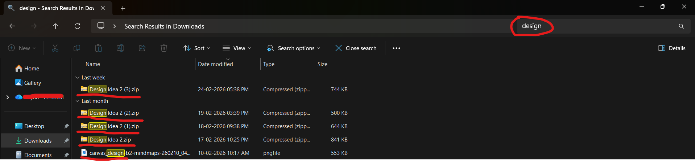
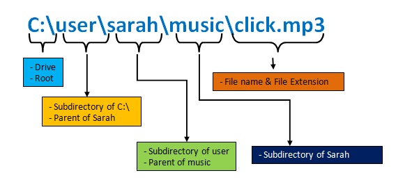

Modern operating systems include powerful search functions capable of locating files by name, keyword, date, or file type. When naming and organisation are structured, search tools dramatically reduce retrieval time.
Search is not a substitute for organisation; it is a multiplier. If files are inconsistently named, search results become cluttered and unreliable. However, when combined with logical naming, search becomes one of the most efficient digital tools available.
Learning advanced search operators (such as filtering by file type or modification date) increases efficiency further. Skilled users rely on search strategically rather than navigating aimlessly.

File Paths
A file path describes the exact location of a file within a storage system. It lists each folder in order, starting from the main directory and ending at the file itself. Understanding file paths strengthens technical awareness and reduces accidental misplacement.
File paths also matter in collaborative or professional environments. When referencing documents, clarity prevents confusion. Knowing how a file is structured within a system allows users to reconstruct organisation logically.
File paths represent the architecture of your digital environment. When the architecture is clear, navigation becomes intuitive.

Module Assessment
Question 1
What is the fastest way to find a specific file on most computers?
Question 2
Which factor improves search results?
Question 3
What does a file path describe?
Question 4
A student cannot find a file quickly. Which practice would help most?
Question 5
What does filtering in a search tool do?
Question 6
Which part of the path shows the final location of the file?
Question 7
A student searches for "essay". Why might too many results appear?